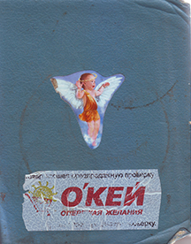
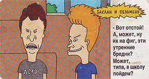

The Delphi Is Good...

Нет плюса, кроме плюса, но C++ самый приплюснутый из плюсов.
Программист не знающий C подобен сосуду не имеющему дна (энштейн 1.5.02)
-Вот отстой! А, может, ну их на фиг, эти утренние бредни? Может, типа, в школу пойдем?
Нотепад++
20.05.2018
Документ отображается в кодировке macCirillic вместо Win1251
Чтобы исправить иди
[Опции->Настройки->Разное]
Авто-определение кодировки символов
Потоки Stream
#include
void main()
{
cout << "Welcome to C++\n";
}
Поток cin приносит символы с клавы
Объявление переменных
int the_data
тип переменной | имя
Классы и объекты
Если есть класс screenclass, то можно создать объект этого класса screen
screenclass screen
Объявление класса
#include <iostream.h>
class DataCL
{private: int privateDMember;
public:
int publicDMember;
int publicMetod(void);}
тип возвращаемого
имя метода входящие параметры
2002-2019